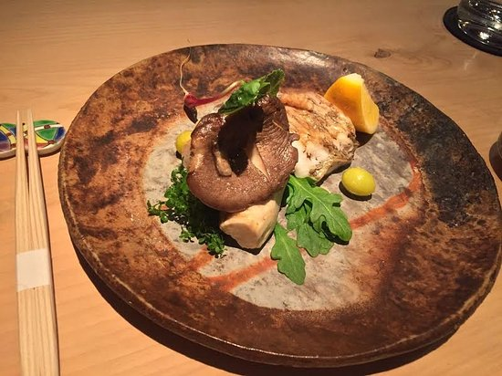

Intro

Brickell is an area in Miami, Miami-Dade County, Southeast Florida, Florida with a population of 10,845
The average household income of Brickell, Miami is $127,758
TO DO'S

Brickell City Centre is a $1.05 billion shopping and mixed-use project in Miami, Florida. When finished, it will span up to five blocks to the west of Brickell Avenue and to the south of the Miami River, in the Brickell district of Greater Downtown.
The Wharf Miami, is a fun 21+ thing to do during the day or night in Brickell, Florida. An all new outdoor pop-up event space anchored with live music, eats, cocktails & good times on the iconic Miami River.
FOOD
As Miamis corporate epicenter, Brickell has catered to the business crowd for years, but as new residences and hotels emerge, more and more eateries settle in the area. New and old, here are 15 of Brickells best bites.
This five-star Japanese restaurant located on Brickell Key offers one of the most unique dining experiences in Miami: an eight-seat only, chefs-selection only, $200 prix-fixe menu. The whole experience is about three hours, and features a menu created by Chef Kevin Cory that varies each night depending on what he feels is the very best to offer that day. You can rest assured that whatever it may be, it will be exquisite. Make sure to plan ahead, because this restaurant is strictly reservation-only and basically impossibly to get seats for without at least 3-4 days in advance planning, with only two time slots: 6:30 p.m. and 9:30 p.m.
